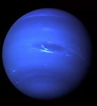

Neptune

- Neptune is the eighth planet from the sun, is the fourth largest planet in the solar system
- Neptune takes about 16 hours to rotate once (a Neptunian day), and about 165 Earth years to orbit the sun (a Neptunian year)
- Neptune's atmosphere is made up predominately of hydrogen and helium, with some methane
- Its diameter is roughly 30, 755 miles.Neptune’s Mass is 10243×1026 kg.
- The color of Neptune is a bright azure blue